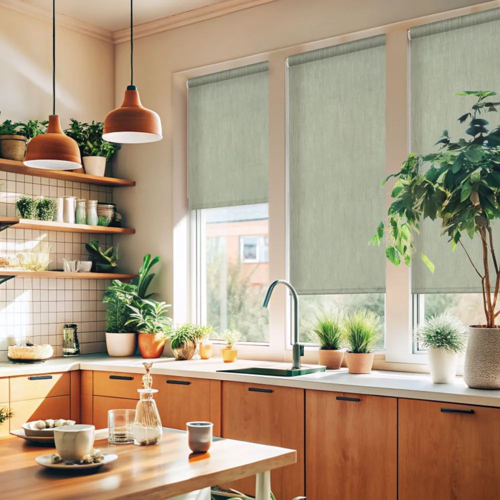

Современные решения для окон
Главная | День-ночь | Блэкаут | С фотопечатью | Плиссе | Жалюзи | Римские шторы | Шторы | Карнизы
В дизайне интерьеров последних лет произошел заметный сдвиг в сторону минимализма и функциональности. На смену громоздким портьерам и сложным многослойным конструкциям пришли лаконичные системы защиты от солнца. Рольшторы прочно заняли нишу самого практичного способа оформления оконного проема, сочетая в себе эстетическую привлекательность и инженерную точность.
Эволюция оконного декора
Традиционные занавески часто перегружают пространство, собирают пыль и требуют сложного ухода. Рулонные шторы, напротив, предлагают принципиально иной подход. Они представляют собой цельное полотно, которое при необходимости аккуратно сворачивается в компактный рулон, скрытый в коробе или закрепленный на валу. Такая конструкция позволяет полностью освободить подоконник, что особенно ценно в небольших помещениях или комнатах с рабочими зонами у окна.
Технологическое совершенство материалов
Секрет популярности этих изделий кроется в разнообразии используемых тканей. Современные производители предлагают материалы с различной степенью светопропускания. Существуют варианты, которые лишь мягко рассеивают солнечные лучи, создавая уютную атмосферу, и модели «блэкаут», способные обеспечить полную темноту даже в самый яркий полдень. Особое внимание уделяется пропиткам: качественные полотна обладают антистатическими и пылеотталкивающими свойствами, что избавляет владельцев от необходимости частой стирки.

Гармония в интерьерных решениях
Рольшторы универсальны с точки зрения стиля. Благодаря широкой палитре оттенков и фактур, они органично вписываются как в строгий офисный интерьер, так и в уютную спальню или детскую. В отличие от жалюзи, которые часто ассоциируются с казенной обстановкой, рулонные шторы выглядят как полноценный элемент декора. Они не спорят с общим оформлением комнаты, а подчеркивают его, создавая ощущение завершенности и порядка.
Удобство эксплуатации и долговечность
Простота управления — еще один аргумент в пользу выбора таких систем. Механизмы подъема и опускания стали настолько надежными, что служат годами без поломок. Возможность интеграции с системами «умного дома» позволяет автоматизировать процесс: шторы могут открываться и закрываться по расписанию или в зависимости от интенсивности солнечного света. Это не только повышает уровень комфорта, но и помогает поддерживать оптимальный микроклимат в помещении, защищая мебель и обои от выгорания.
Инвестиция в уют
Выбор в пользу рольштор — это решение в пользу рационального использования пространства. Они не требуют сложного монтажа, легко адаптируются под любые размеры окон и позволяют гибко регулировать уровень освещенности. В условиях современной городской жизни, где ценится каждая минута и каждый квадратный метр, такие системы становятся идеальным инструментом для создания гармоничного и функционального жилого пространства.